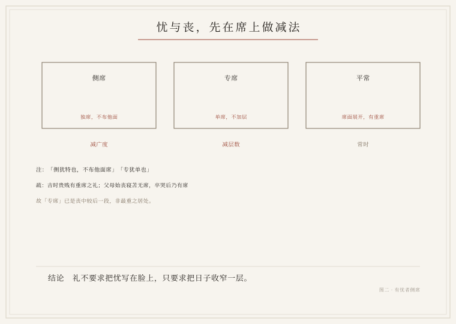

曲礼上 · 一·八十六 · 第 84 课
亲有病则侧席，有丧则专席。两件事都落在席上：一是席不铺开，一是席不加层。忧与丧，从坐具上就看得见。
说什么事：有忧者侧席而坐，有丧者专席而坐。
落在哪一层：仪，兼及分。席之广狭与层数，写着心里的轻重。
为何编在此位：上节讲亲疾之子容，此节讲亲疾与居丧之席位。容在外，席在身下，皆忧之形。
【经】有憂者側席而坐，有喪者專席而坐。
【注】側猶特也。憂不在接人，不布他面席。降居處也，專猶單也。
侧席 注「侧犹特也」；疏「侧犹独也，独席谓独坐，不舒他面席也」。席只铺一人之面，不向旁展开。
专席 注「专犹单也」；疏「专犹单也……并不重」。单层之席，不加第二层。
不布他面席 疏「明忧不在接人故也；平常则舒他面席」。常时席面展开，可接旁人；有忧则不展。
《聘礼》「公侧受醴」 疏引以证「侧」即「特」。
重席之礼 疏：吉时贵贱有重席之礼。丧则降其居处。
始丧无席 疏：父母始丧，寝苫无席；卒哭后乃有芐剪不纳；自齐衰以下，始丧而有席，并不重。
亲有病的人，坐一张不向旁展开的独席；有丧的人，坐一张不加层的单席。
一节两句，都在席上做减法。侧席减的是席面的广度，专席减的是席的层数。礼不要求把忧写在脸上，只要求把日子收窄一层。
第一层 席是日子 古人坐必席。席之广狭、层数，就是日常生活的规格。忧与丧，先从这里降。
第二层 不布他面 疏说「忧不在接人」。席面向旁展开，是为与人并坐；不展，是不预备接待。这不是拒人，是心里没有余位。
第三层 不重 吉时有重席，是贵贱之等；丧则去其重，是降居处。等级在丧中让位于哀。
第四层 始丧无席 疏讲到寝苫无席，卒哭后才有席。可见本节之「专席」已是丧礼中较后的一段，不是最重的居处。
与今日何干 家里出了大事，人会把客厅收拾起来、把待客的椅子搬走，只留自己一个坐处。此节之今形。
| 左 | 右 |
|---|---|
| 侧席 | 独席，席面不向旁展开 |
| 不布他面席 | 不预备与人并坐接人 |
| 专席 | 单席，不加第二层 |
| 降居处 | 丧中降其日常之规格 |
| 平常舒他面席 | 常时席面展开，可接人 |
| 始丧无席 | 寝苫，卒哭后乃有席 |
画室内三席对照：左席只铺一人之面、两旁露出土地；中席铺开较宽、边缘平整（示平常）；右席两层叠置（示吉时重席）、层边可数。三席之间以地面为隔。不画人、不写文字。赭色只在右席上层的一道缘边。
